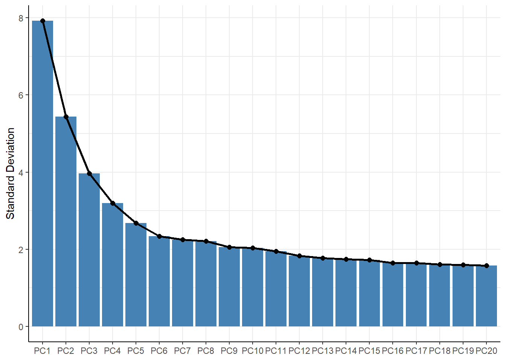

spata-v2-plotting-dimensional-reduction.RmdThe spata-object knows three types of dimensional reduction data: PCA, TSNE and UMAP. Every initiateSpataObject_*()-function returns a spata-object that has already undergone these analysis steps. Still, you might want to run the function again with different parameter input. This tutorial shows how to run dimensional reduction analysis as well as how to obtain and visualize the results.
# load packages
library(SPATA2)
library(tidyverse)
spata_obj <- loadSpataObject("data/spata-obj-gbm275.RDS") The names of the functions that do the dimensional reductions are as intuitive as it gets.
# pca
spata_obj <- runPca(object = spata_obj)
# tsne
spata_obj <- runTsne(object = spata_obj, n_pcs = 20)
# umap
spata_obj <- runUmap(object = spata_obj, n_pcs = 20)Note that in order to be able to use runTsne() and runUmap() the spata-object must contain principal component analysis data. The number of principal components to be used to calculate the tsne- and umap embedding can be manipulated via the argument n_pcs.
If you want to use dimensional reduction data within SPATA2 that comes from external functions you can overwrite the respective data.frames with setPcaDf(), setTsneDf() and setUmapDf().
The dimensional reduction data is stored in form of data.frames in the slot @dim_red. You can conveniently extract the data via the functions getPcaDf(), getTsneDf() and getUmapDf().
# pca
getPcaDf(object = spata_obj, n_pcs = 20)## # A tibble: 3,734 x 22
## barcodes sample PC1 PC2 PC3 PC4 PC5 PC6 PC7 PC8 PC9
## <chr> <chr> <dbl> <dbl> <dbl> <dbl> <dbl> <dbl> <dbl> <dbl> <dbl>
## 1 AAACAAG~ T275 -2.70 0.392 -1.67 4.27 -0.639 -2.33 -0.659 -1.96 1.52
## 2 AAACACC~ T275 -12.2 5.65 2.74 -4.77 -1.33 0.219 -1.50 -0.110 1.08
## 3 AAACAGA~ T275 5.65 1.11 -6.65 -0.751 -1.86 1.23 1.12 0.247 0.295
## 4 AAACAGC~ T275 1.27 -7.28 5.02 -0.449 -2.85 -3.06 -0.425 -0.154 1.33
## 5 AAACAGG~ T275 -8.40 -0.848 6.21 -4.15 -3.90 -0.555 -3.84 -1.71 4.32
## 6 AAACAGT~ T275 -6.56 3.36 -1.50 0.555 -0.595 0.839 0.250 0.961 1.13
## 7 AAACATT~ T275 -5.35 3.12 -3.36 0.966 -0.364 -1.41 -0.404 -2.57 3.31
## 8 AAACCGG~ T275 0.422 -7.06 5.36 -1.91 -4.24 1.77 -1.29 1.62 0.439
## 9 AAACCGT~ T275 -5.54 0.946 1.65 0.889 2.90 1.69 -0.512 -1.61 1.70
## 10 AAACCTA~ T275 -9.87 7.24 -1.96 -2.05 0.707 -1.22 0.589 2.30 0.421
## # ... with 3,724 more rows, and 11 more variables: PC10 <dbl>, PC11 <dbl>,
## # PC12 <dbl>, PC13 <dbl>, PC14 <dbl>, PC15 <dbl>, PC16 <dbl>, PC17 <dbl>,
## # PC18 <dbl>, PC19 <dbl>, PC20 <dbl>
# tsne
getTsneDf(object = spata_obj)## # A tibble: 3,734 x 4
## barcodes sample tsne1 tsne2
## <chr> <chr> <dbl> <dbl>
## 1 AAACAAGTATCTCCCA-1 T275 -10.6 20.2
## 2 AAACACCAATAACTGC-1 T275 34.6 15.4
## 3 AAACAGAGCGACTCCT-1 T275 -16.3 -13.3
## 4 AAACAGCTTTCAGAAG-1 T275 21.3 -19.2
## 5 AAACAGGGTCTATATT-1 T275 19.1 1.17
## 6 AAACAGTGTTCCTGGG-1 T275 11.3 27.2
## 7 AAACATTTCCCGGATT-1 T275 4.57 29.8
## 8 AAACCGGGTAGGTACC-1 T275 22.9 -18.6
## 9 AAACCGTTCGTCCAGG-1 T275 8.66 9.47
## 10 AAACCTAAGCAGCCGG-1 T275 27.3 28.5
## # ... with 3,724 more rows
# umap
getUmapDf(object = spata_obj)## # A tibble: 3,734 x 4
## barcodes sample umap1 umap2
## <chr> <chr> <dbl> <dbl>
## 1 AAACAAGTATCTCCCA-1 T275 2.45 -2.25
## 2 AAACACCAATAACTGC-1 T275 6.60 -1.35
## 3 AAACAGAGCGACTCCT-1 T275 -6.14 3.86
## 4 AAACAGCTTTCAGAAG-1 T275 0.426 2.06
## 5 AAACAGGGTCTATATT-1 T275 3.28 1.17
## 6 AAACAGTGTTCCTGGG-1 T275 4.91 -3.67
## 7 AAACATTTCCCGGATT-1 T275 4.13 -3.28
## 8 AAACCGGGTAGGTACC-1 T275 1.14 2.37
## 9 AAACCGTTCGTCCAGG-1 T275 4.61 -0.952
## 10 AAACCTAAGCAGCCGG-1 T275 5.87 -3.03
## # ... with 3,724 more rowsIf you are working with spata data.frames you can use the functions joinWithPca(), joinWithTsne() and joinWithUmap() to add the embedding.
spata_df <-
getSpataDf(object = spata_obj)
with_gfap <- joinWith(object = spata_obj,
spata_df = spata_df,
genes = "GFAP")
# output
with_gfap## # A tibble: 3,734 x 3
## barcodes sample GFAP
## <chr> <chr> <dbl>
## 1 AAACAAGTATCTCCCA-1 T275 0.742
## 2 AAACACCAATAACTGC-1 T275 0.726
## 3 AAACAGAGCGACTCCT-1 T275 0.689
## 4 AAACAGCTTTCAGAAG-1 T275 0.854
## 5 AAACAGGGTCTATATT-1 T275 0.717
## 6 AAACAGTGTTCCTGGG-1 T275 0.742
## 7 AAACATTTCCCGGATT-1 T275 0.736
## 8 AAACCGGGTAGGTACC-1 T275 0.768
## 9 AAACCGTTCGTCCAGG-1 T275 0.880
## 10 AAACCTAAGCAGCCGG-1 T275 0.727
## # ... with 3,724 more rows
with_pca <- joinWithPca(object = spata_obj,
spata_df = with_gfap,
n_pcs = 20)
# output
with_pca## # A tibble: 3,734 x 23
## barcodes sample GFAP PC1 PC2 PC3 PC4 PC5 PC6 PC7 PC8
## <chr> <chr> <dbl> <dbl> <dbl> <dbl> <dbl> <dbl> <dbl> <dbl> <dbl>
## 1 AAACAAG~ T275 0.742 -2.70 0.392 -1.67 4.27 -0.639 -2.33 -0.659 -1.96
## 2 AAACACC~ T275 0.726 -12.2 5.65 2.74 -4.77 -1.33 0.219 -1.50 -0.110
## 3 AAACAGA~ T275 0.689 5.65 1.11 -6.65 -0.751 -1.86 1.23 1.12 0.247
## 4 AAACAGC~ T275 0.854 1.27 -7.28 5.02 -0.449 -2.85 -3.06 -0.425 -0.154
## 5 AAACAGG~ T275 0.717 -8.40 -0.848 6.21 -4.15 -3.90 -0.555 -3.84 -1.71
## 6 AAACAGT~ T275 0.742 -6.56 3.36 -1.50 0.555 -0.595 0.839 0.250 0.961
## 7 AAACATT~ T275 0.736 -5.35 3.12 -3.36 0.966 -0.364 -1.41 -0.404 -2.57
## 8 AAACCGG~ T275 0.768 0.422 -7.06 5.36 -1.91 -4.24 1.77 -1.29 1.62
## 9 AAACCGT~ T275 0.880 -5.54 0.946 1.65 0.889 2.90 1.69 -0.512 -1.61
## 10 AAACCTA~ T275 0.727 -9.87 7.24 -1.96 -2.05 0.707 -1.22 0.589 2.30
## # ... with 3,724 more rows, and 12 more variables: PC9 <dbl>, PC10 <dbl>,
## # PC11 <dbl>, PC12 <dbl>, PC13 <dbl>, PC14 <dbl>, PC15 <dbl>, PC16 <dbl>,
## # PC17 <dbl>, PC18 <dbl>, PC19 <dbl>, PC20 <dbl>To see how many principal components account for the main variation use plotPcaVariation() which plots a screeplot.
plotPcaVariation(object = spata_obj, n_pcs = 20)
Two dimensional visualization of the embedding can be visualized via plotPca().
plotPca(object = spata_obj,
color_by = "seurat_clusters",
pt_alpha = 0.75,
pt_clrp = "npg",
pt_size = 0.75,
n_pcs = 12,
nrow = 3
)Figure 4.2 Visualization of PCA-results.
Two dimensional visualization of the embedding can be visualized via plotTsne().
plotTsne(object = spata_obj,
color_by = "seurat_clusters",
pt_alpha = 0.75,
pt_clrp = "npg",
pt_size = 0.75,
)Figure 4.3 Visualization of TSNE-results.
Two dimensional visualization of the embedding can be visualized via plotUmap().
plotUmap(object = spata_obj,
color_by = "seurat_clusters",
pt_alpha = 0.75,
pt_clrp = "npg",
pt_size = 0.75,
)Figure 4.4 Visualization of UMAP-results.